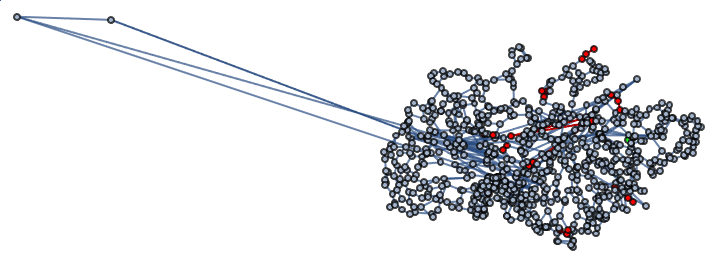

Cells moving in the liver
Specific T cells kill malaria parasites. How do they find the parasites (hunting or random movement)? Results were only partially conclusive, so we model the liver sinusoids as a graph and cell paths as walks on the graph.
